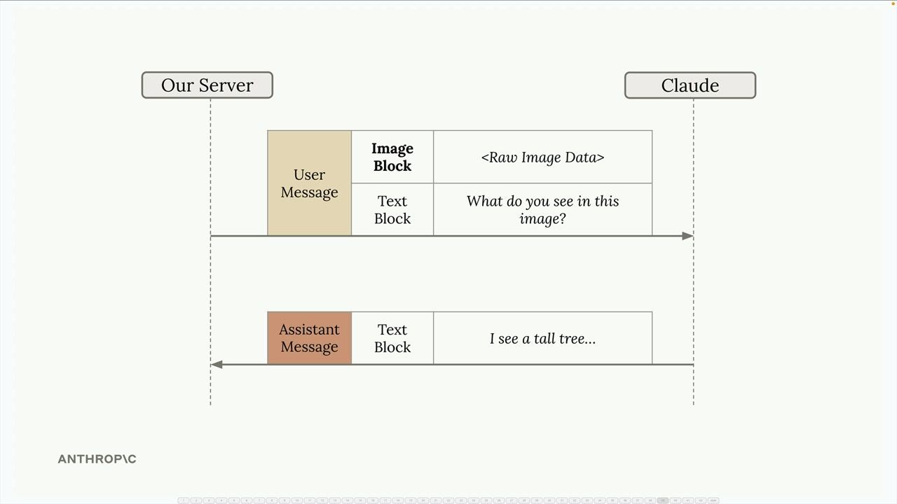
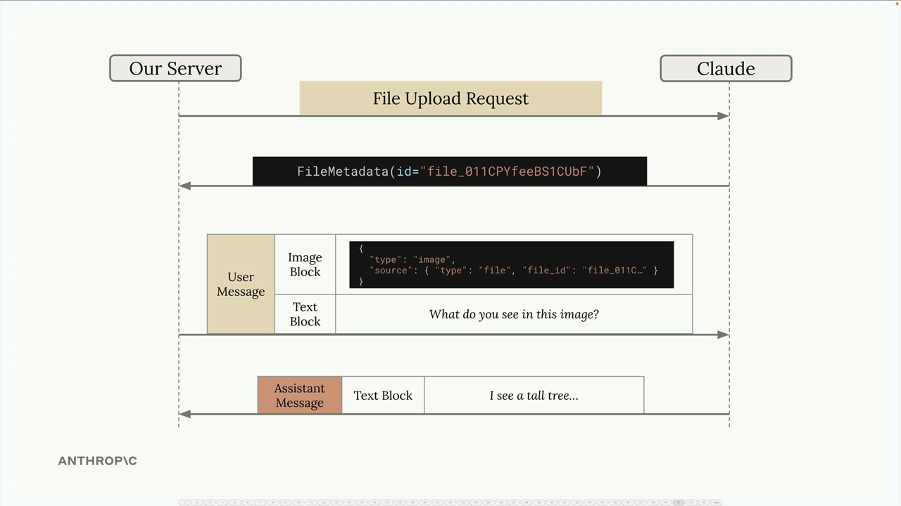
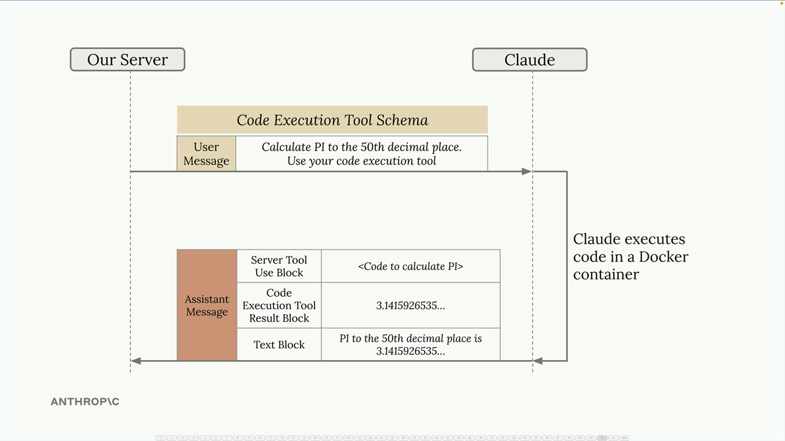
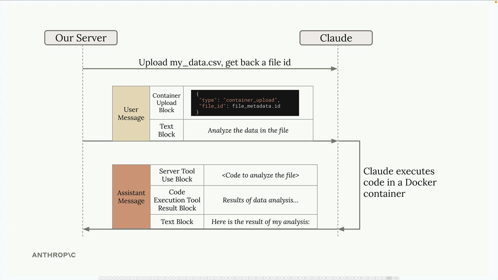
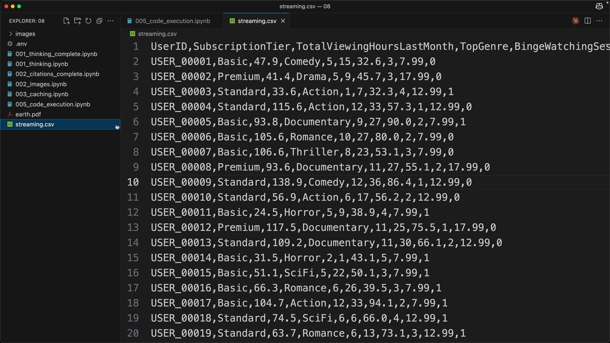
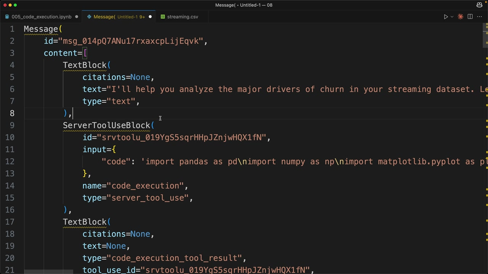
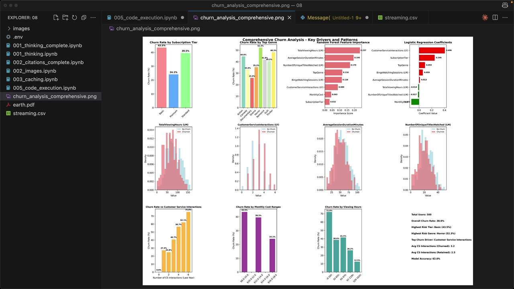

코드 실행과 Files API
Anthropic API는 Files API와 코드 실행이라는 두 가지 강력한 기능을 제공하며, 이 둘은 함께 사용할 때 특히 효과적입니다. 처음에는 별개의 기능처럼 보일 수 있지만, 이를 결합하면 Claude에게 복잡한 작업을 위임할 수 있는 흥미로운 가능성이 열립니다.
Files API
Files API는 파일 업로드를 처리하는 대안적인 방법을 제공합니다. 이미지나 PDF를 메시지에 base64 데이터로 직접 인코딩하는 대신, 파일을 미리 업로드해 두고 나중에 참조할 수 있습니다.

작동 방식은 다음과 같습니다:
- 별도의 API 호출을 통해 파일(이미지, PDF, 텍스트 등)을 Claude에 업로드합니다
- 고유한 파일 ID가 포함된 파일 메타데이터 객체를 받습니다
- 이후 메시지에서 원시 파일 데이터 대신 해당 파일 ID를 참조합니다

이 방법은 동일한 파일을 여러 번 참조하거나, 매 요청마다 포함하기 번거로운 대용량 파일을 다룰 때 특히 유용합니다.
코드 실행 도구
코드 실행은 별도의 구현을 제공할 필요가 없는 서버 기반 도구입니다. 요청에 미리 정의된 도구 스키마만 포함하면, Claude가 격리된 Docker 컨테이너에서 Python 코드를 선택적으로 실행할 수 있습니다.

코드 실행 환경의 주요 특징:
- 격리된 Docker 컨테이너에서 실행됩니다
- 네트워크 접근 없음 (외부 API 호출 불가)
- 단일 대화 중 Claude가 코드를 여러 번 실행할 수 있습니다
- 실행 결과는 Claude가 최종 응답을 위해 캡처하고 해석합니다
Files API와 코드 실행 결합하기
진정한 강점은 이 두 기능을 함께 사용할 때 발휘됩니다. Docker 컨테이너에는 네트워크 접근이 없기 때문에, Files API가 실행 환경으로 데이터를 주고받는 주요 수단이 됩니다.

일반적인 워크플로우는 다음과 같습니다:
- Files API를 사용해 데이터 파일(예: CSV)을 업로드합니다
- 메시지에 파일 ID가 포함된 컨테이너 업로드 블록을 추가합니다
- Claude에게 데이터 분석을 요청합니다
- Claude가 파일을 처리하는 코드를 작성하고 실행합니다
- Claude가 다운로드 가능한 출력물(예: 플롯)을 생성할 수 있습니다
실용적인 예시
스트리밍 서비스 데이터를 사용한 실제 예시를 살펴보겠습니다. CSV 파일에는 구독 등급, 시청 습관, 이탈 여부(구독 취소) 등 사용자 정보가 포함되어 있습니다.

먼저, 헬퍼 함수를 사용해 파일을 업로드합니다:
file_metadata = upload('streaming.csv')그런 다음 업로드된 파일과 분석 요청을 모두 포함하는 메시지를 생성합니다:
messages = []
add_user_message(
messages,
[
{
"type": "text",
"text": """Run a detailed analysis to determine major drivers of churn.
Your final output should include at least one detailed plot summarizing your findings."""
},
{"type": "container_upload", "file_id": file_metadata.id},
],
)
chat(
messages,
tools=[{"type": "code_execution_20250522", "name": "code_execution"}]
)응답 이해하기
Claude가 코드 실행을 사용할 때, 응답에는 여러 유형의 블록이 포함됩니다:
- 텍스트 블록 - Claude의 분석 및 설명
- 서버 도구 사용 블록 - Claude가 실행하기로 결정한 실제 코드
- 코드 실행 도구 결과 블록 - 코드 실행 결과물

Claude는 단일 응답 중에 코드를 여러 번 실행하며 분석을 점진적으로 구축할 수 있습니다. 각 실행 주기에는 코드와 그 결과가 포함됩니다.
생성된 파일 다운로드
가장 강력한 기능 중 하나는 Claude가 파일(플롯이나 보고서 등)을 생성하고 다운로드 가능하게 만드는 능력입니다. Claude가 시각화를 생성하면 컨테이너에 저장되며, Files API를 사용해 다운로드할 수 있습니다.
응답에서 type: "code_execution_output"이 있는 블록을 찾으세요 - 이 블록에는 생성된 콘텐츠의 파일 ID가 포함되어 있습니다:
download_file("file_id_from_response")
그 결과, 수작업으로 코딩했다면 상당한 시간이 걸렸을 전문적인 시각화가 포함된 종합적인 분석 결과물을 얻을 수 있습니다.
데이터 분석을 넘어서
데이터 분석이 가장 자연스러운 활용 사례이지만, Files API와 코드 실행의 조합은 다양한 가능성을 열어줍니다:
- 이미지 처리 및 조작
- 문서 파싱 및 변환
- 수학적 연산 및 모델링
- 커스텀 형식의 보고서 생성
핵심은 Files API를 통해 입력과 출력을 제어하면서 복잡한 연산 작업을 Claude에게 위임할 수 있다는 것입니다. 이를 통해 Claude가 실제로 코드를 실행하고 솔루션을 반복적으로 개선하는 코딩 어시스턴트가 되는 강력한 워크플로우가 만들어집니다.